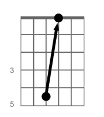

Strings are numbered from the thinnest string (1st string) to the thickest string (6th string). The tuning is given from the 6th string to the 1st string: E-A-D-G-B-E. This tuning (E-A-D-G-B-E) is called standard tuning.
1. Fret the fifth fret of the sixth string, the Low E String (pictured). Play the fifth and sixth string. Match the pitch of the fifth string to the pitch of the sixth string. Listen for a beating or pulsating between the two strings. The faster the beating, the more out of tune it is. Adjust the A string until there is virtually no beating.
2. Hold the fifth fret of the fifth string, A string. Play the fourth and fifth string. Match the pitch of the fourth string to the pitch of the fifth string. Similar to step 1, listen for the beating/pulsating sound to tune.
3. Hold the fifth fret of the fourth string, D string. Play the third and fourth string. Match the pitch of the third string to the pitch of the fourth string.

4. Hold the fourth fret of the third string, G string. Play the second and third string. Match the pitch of the second string to the pitch of the third string.
5. Hold the fifth fret of the second string, B string. Play the first and second string. Match the pitch of the first string to the pitch of the second string.